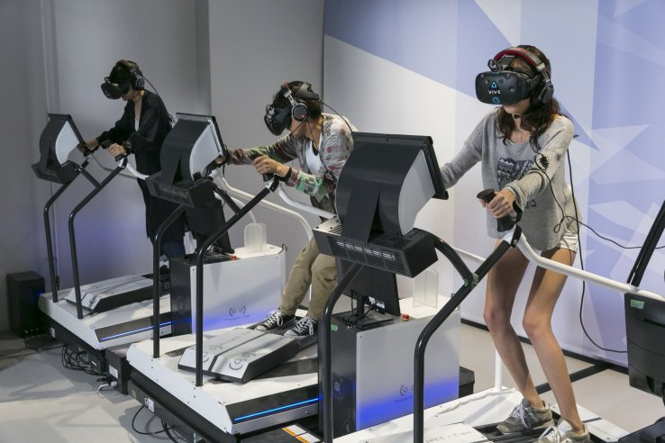

12 Mars 2025
La VR révolutionne les soins
Comment la réalité virtuelle aide les thérapies et la chirurgie.
Lire l'analyseThème : Réalité Virtuelle au service de l'entraînement et de la médecine
Comment la réalité virtuelle aide les thérapies et la chirurgie.
Lire l'analyse
Medtronic utilise la VR pour la chirurgie du cerveau.
Lire l'analyse